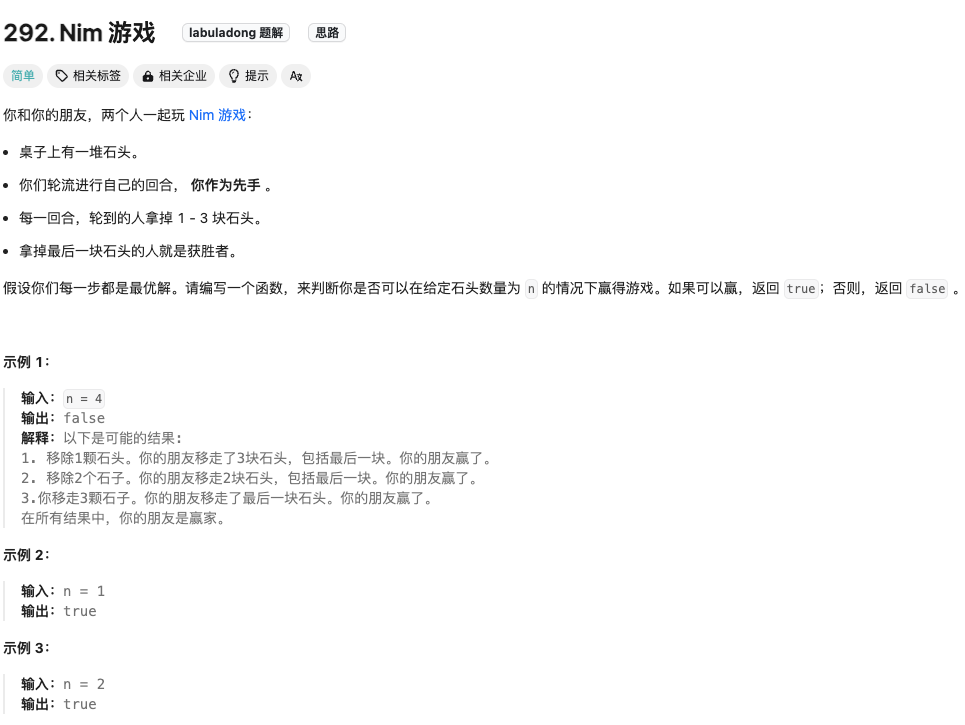
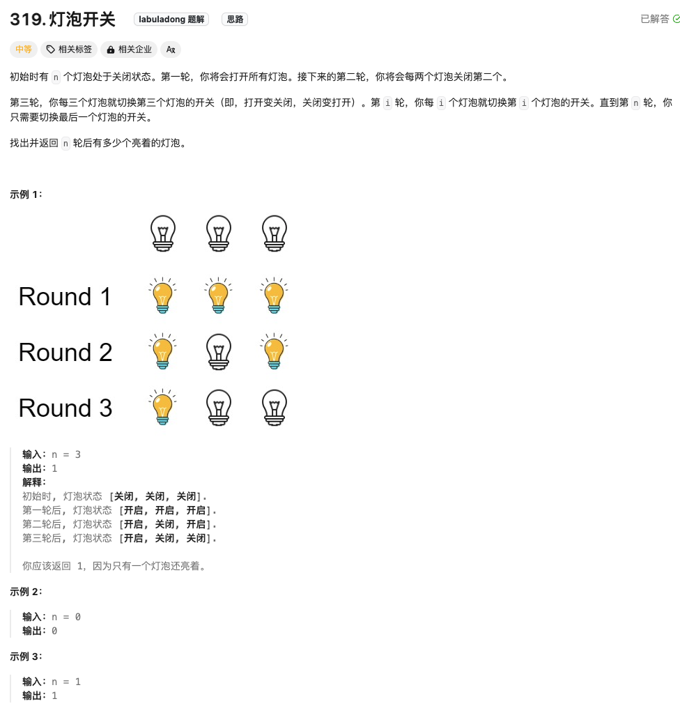
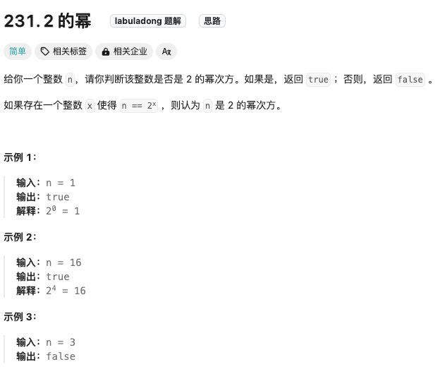

所谓的模拟算法类型的题目，没有特定的模板，没有特定的算法，你需要做的是找规律，或者单纯的根据题意模拟一段过程。
提莫攻击

思路是很直接的，读懂题目即可。时间复杂度为O（N），空间复杂度为O（1）
class Solution {
public:
int findPoisonedDuration(vector& timeSeries, int duration) {
int totally_result=0;
int time_last=timeSeries[0];
for(int i=1;i<timeSeries.size();i++)
{
if(time_last+duration<=timeSeries[i])
{//不用重置
totally_result+=duration;//记录冰冻的时间
time_last=timeSeries[i];//更新
}
else
{//要重置
totally_result+=(timeSeries[i]-time_last);
time_last=timeSeries[i];//更新
}
}
totally_result+=duration;//最后的结果
return totally_result;
}
};
z字型变换

Click to expand the code。我的解法的时间和空间复杂度都为O（N）思路很简单。就是定义一个size为numRows的Vector.每一个元素为string，按照z变换的索引来把每个字符放到该在的vector元素上。最后输出依次叠加即可~
class Solution {
public:
string convert(string s, int numRows) {
if(numRows<2)
return s;
//按行索引来存到vector中
vector<string> result_group (numRows);//一共就numRows个元素
int i=0;//代表索引。
int flag=1;//控制索引的移动
for(auto c:s)
{
result_group[i]+=c;//在对应行上加字符
if(i==numRows-1 && flag==1)
flag=-1;
if(i==0 && flag==-1)
flag=1;
i+=flag;
}
string result;
for(int i=0;i<numRows;i++)
result+=result_group[i];
return result;
}
};
外观数列

采用递归的解法：由于递归中带有for循环，时间复杂度为O（N2）,空间复杂度为递归的栈空间
class Solution {
public:
string countAndSay(int n) {
if(n==1)
return "1";
string input_str=countAndSay(n-1);//每次输入的为上一个的结果
int temp_num=1;//初始化为1
char temp_char=input_str[0];
string result;
for(int i=1;i<input_str.size();i++)
{
if(input_str[i]==temp_char)//还是等于结果的
{
temp_num++;
}
else
{
result=result+to_string(temp_num)+temp_char;
//然后重置一下
temp_char=input_str[i];//新的字符
temp_num=1;//当前为1个
}
}
//出来的结果再加一次
result=result+to_string(temp_num)+temp_char;
return result;
}
};
由于数量只有30个，还有一种解法是打表直接输出全部结果😂,时间复杂度为O(1)，空间复杂度为O(C×M)。其中 C 是 N 是上界，在本题中 C=30，M 为生成的字符串中的最大长度。
但类似这种可以拆分为子问题的解题思路最直接其实还是递归~
数青蛙

Click to expand the code。时间复杂度为O（N），空间复杂度为O（1）.用计数法最简单
class Solution {
public:
int minNumberOfFrogs(string croakOfFrogs) {
// croak为一只青蛙完整的叫声
//用计数器，分别计算每个字符发了多少
int c=0, r=0, o=0, a=0,k=0;
int num_frog=0;
for(auto _str:croakOfFrogs)
{
if(_str=='c')
{
if(k>0)
k--;//若前面有青蛙发过k，那么就是前面那只
else//前面没有k
num_frog++;//增加一只青蛙
c++;//发了声音，自加
}
else if (_str=='r')
{
if(c>0)
c--;
else //若前面没有c，那么就是不符合要求
return -1;
r++;//发了r
}
else if (_str=='o')
{
if(r>0)
r--;
else //若前面没有r，那么就是不符合要求
return -1;
o++;//发了o
}
else if (_str=='a')
{
if(o>0)
o--;
else //若前面没有o，那么就是不符合要求
return -1;
a++;//发了a
}
else if (_str=='k')
{
if(a>0)
a--;
else //若前面没有a，那么就是不符合要求
return -1;
k++;//发了k
}
}
// 遍历完后。如果全部都为0，那么正好发完音
if(c==0
&&r==0
&&o==0
&&a==0
&&k>=1) //最后的k应该是大于等于1（由于k可能是不受到c影响的）
return num_frog;
else
return -1;
}
};
汽水瓶

Click to expand the code
下面解法写法上更简单，但是不好理解，建议用上面直观的一步一步分析～
杨辉三角的变形

采用数学归纳法
完全数计算

直接按照题目要求实现数学过程
质数/素数
质数又称素数。一个大于1的自然数，除了1和它自身外，不能被其他自然数整除的数叫做质数
质数因子

Click to expand the code
素数伴侣

此题较难，在做的时候也是根据答案一步一步做的，首先设计了判断是否素数的判据（给出两种写法）。其次这里用递归获取最长的素数伴侣，又涉及到选择与否，更像是回溯算法，稍微有点复杂了～
查找组成一个偶数最接近的两个素数

也可以用一个全局变量来记录全部最小值。但是这样的复杂度为O（N）而本方法的复杂度为O（N/2）。当然乘上还没算循环内的isprimary函数的复杂度为O（N）
高效寻找素数
Click to expand the code
矩阵乘法

Click to expand the code.数组中的矩阵运算
百钱买百鸡问题

Click to expand the code
计算日期到天数转换

闰年是可以整除4但不能整除100
尼科彻斯定理

数学归纳法
将真分数分解为埃及分数

Click to expand the code。最简单的解法～～～
等差数列

Click to expand the code
求解立方根
Click to expand the code。关键点在于要考虑负号以及小数的情况。且浮点数left<=right会无限运行，需要给个小范围的阈值
求最小公倍数

Click to expand the code。a*b一定是a、b的公倍数，但不一定是最小的
Nim游戏

Click to expand the code
石头游戏
Click to expand the code
灯泡开关

没有很理解这个过程，单纯做一个记录吧。可参考Link
2的幂

Click to expand the code